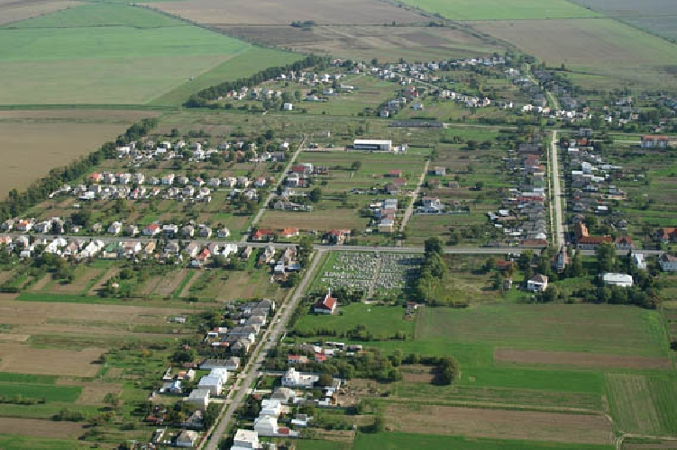

Súčasné Vojčice majú takmer 2 064 obyvateľov, ktorí tu nachádzajú všetky potrebné služby a zariadenia. Aj keď prevažná časť obyvateľov sa zoberá poľnohospodárstvom, zvlášť v poslednom období sa rozvíja aj priemyslená výroba a služby. Obec má dva kostoly, moderný dom smútku, nákupné stredisko, 12-triednu Základnú školu, Materskú školu, poštu, dobre vybavený Obecný úrad a niekoľko menších prevádzkární.
Vojčice sú dobre prístupné autobusovou aj železničnou dopravou. Ich poloha v blízkosti hlavných trás vedúcich do Maďarska a na Ukrajinu dáva predpoklad pre budúci rozvoj cestovného ruchu, zvlášť rôznych foriem agroturistiky.
Firma Lekos sa zaoberá výrobou strojov a zariadení pre potravinársky priemysel.
Pre Vojcice na wiki klikni sem